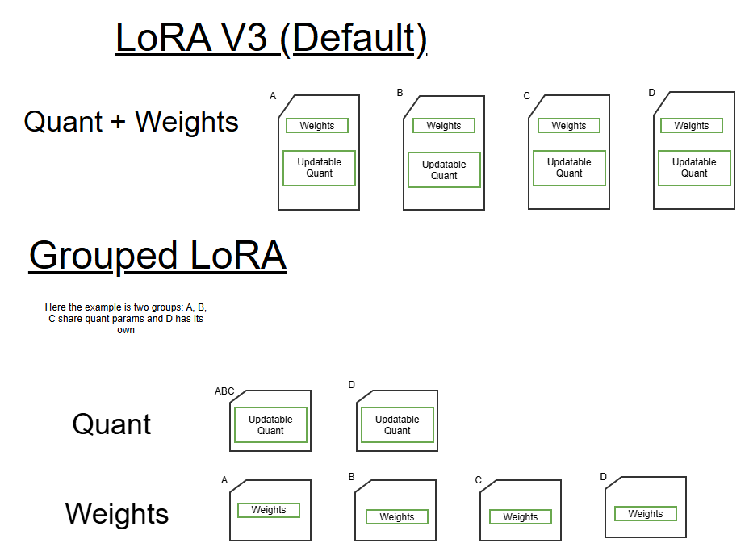

LoRA v3 Optimizations¶
Overview¶
This page describes several optimizations to the normal LoRA V3 workflow that can provide specific KPI improvement in select cases. The following assumes knowledge of the regular LoRA V3 workflow.
The optimizations are: No-Updateable Quantization, Grouped LoRA, All-Updateable Quantization, Float_Only-Updateable Quantization, and Hot Switch. Note that each use case has different adapter quantization calibration prerequisites. This page does not cover how to quantize to meet the different prerequisites and is assumed client has performed adequate quantization calibration for their use case.
Notes:
1 Depedenent on use case.
No-Updateable Quantization¶
No-updateable quantization is a special case of LoRA V3 where all adapters share the same quantization parameters. This means that quantization parameters in the base graph and adapters do not need to update when new adapter or concurrency weights are switched.
If users’ adapters meet this criteria, they may see the following KPI changes:
RAM |
ROM |
Adapter Switch Time |
Accuracy |
|---|---|---|---|
Improved |
Improved |
Improved |
Use case dependent* |
* If adapters cannot share quantization parameters then accuracy will be worse
Offline Graph Preparation Flow¶
Command templates for offline preparation tools¶
To enable no-updateable quant in the offline preparation tools, users can maintain their existing commands and additionally add –quant_updatable_mode none to the command line of the qairt-lora-model-creator and qairt-converter. This will mark no tensors as having updateable quantization parameters i.e. only weights can be switched through new adapter/concurrency applications.
See LoRA V3 offline preparation tools for general LoRA V3 tools usage.
qairt-lora-model-creator¶
qairt-lora-model-creator --lora_config <updated_lora_config_yaml> \
--output_dir <output directory path> --quant_updatable_mode none
qairt-converter¶
qairt-converter -i <concatenated-model-onnx> --quantization_overrides <base-case-encodings> \
--lora_weight_list <tensor-name-list-from-model-creator> --quant_updatable_mode none
Context Binary Generation¶
To generate binary sections containing adapter weight updates without quantization updates, users must specify weights_only: True option in the adapter weight YAML config.
use_case:
- name: example_adapter
- graph: example_graph
- safetensors: example_adapter.safetensors
- encodings: example_adapter.encodings
- weights_only: True
Command template for context binary generation¶
qnn-context-binary-generator --backend libQnnHtp.so --dlc_path <quantized-dlc> \
--binary_file <context-bin> --config_file <htp-config-json> \
--adapter_weight_config <lora-cbg-config-yaml> --output_dir <output-path>
On-target QNN Call Flow¶
There are no changes in QNN on-target flow to utilize no-updateable quant. QnnContext_applyBinarySection() is used in the same manner as LoRA V3. See QNN On-Target Call Flow for more details on general LoRA V3 call flow.
On-target Genie Execution Flow¶
There are no changes in QNN on-target flow to utilize no-updateable quant. See Genie Execution Flow for more details on general Genie LoRA V3 call flow.
Grouped LoRA¶
Grouped LoRA is a special case of LoRA V3 where multiple groups of adapters or concurrencies share the same quantization parameters. In these cases, users can intermittently switch quantization parameters instead of switching with every adapter application. This can lead to improved accuracy for adapters that do not share quantization parameters, but allow fast switching between adapters in the same group.
If users’ adapters meet this criteria, they may see the following KPI changes:
RAM |
ROM |
Adapter Switch Time |
Accuracy |
|---|---|---|---|
Improved |
No change |
-Improved within group
-Same to switch between groups
|
Use case dependent* |
* If adapters cannot share quantization parameters then accuracy will be worse
Offline Graph Preparation Flow¶
Command templates for offline preparation tools¶
There is no change needed in the offline preparation tools to enable Grouped LoRA. Users may prepare their graphs through the steps described LoRA V3 offline preparation tools.
Context Binary Generation¶
To facilitate Grouped LoRA use cases, users will generate different adapters containing quantization only and weight only updates. This differs from LoRA V3 where adapters contain both quantization and weight updates. Splitting the updates allows users to apply new quantization parameters to switch groups or apply new weights to switch adapters in the same group.

To generate binary sections containing adapter weight updates without quantization updates, users must specify weight_only: True option in the adapter weight YAML config. To generate binary sections containing quantization updates without any weight updates, users must specify encodings_only: True. Note that both options may be specified together to produce both a quantization only adapter and weight only adapter for the same use case.
use_case:
- name: example_adapter
- graph: example_graph
- safetensors: example_adapter.safetensors
- encodings: example_adapter.encodings
- weights_only: True
- encodings_only: True
Take the following example with three groups of distinct quantization parameters.
Group One: adapter1, adapter2
Group Two: adapter3, adapter4
Group Three: adapter5
The following configuration file may be used
# Group 1 specification.
use_case:
- name: adapter1
- graph: example_graph
- safetensors: adapter1.safetensors
- encodings: adapter1.encodings
- weights_only: True
- encodings_only: True
use_case:
- name: adapter2
- graph: example_graph
- safetensors: adapter2.safetensors
- encodings: adapter2.encodings
- weights_only: True
# Group 2 specification.
use_case:
- name: adapter3
- graph: example_graph
- safetensors: adapter3.safetensors
- encodings: adapter3.encodings
- weights_only: True
- encodings_only: True
use_case:
- name: adapter4
- graph: example_graph
- safetensors: adapter4.safetensors
- encodings: adapter4.encodings
- weights_only: True
# Group 3 specification
use_case:
- name: adapter5
- graph: example_graph
- safetensors: adapter5.safetensors
- encodings: adapter5.encodings
This will produce
Group One: encodings only adapter for adapter1 and adapter2, weights only adapter for adapter1 and weights only adapter for adapter2.
Group Two: encodings only adapter for adapter3 and adapter4, weights only adapter for adapter3 and weights only adapter for adapter4.
Group Three: weights and encoding adapter for adapter5.
Command template for context binary generation¶
qnn-context-binary-generator --backend libQnnHtp.so --dlc_path <quantized-dlc> \
--binary_file <context-bin> --config_file <htp-config-json> \
--adapter_weight_config <lora-cbg-config-yaml> --output_dir <output-path>
On-target QNN Call Flow¶
There are no changes in QNN on-target flow to utilize Grouped LoRA. QnnContext_applyBinarySection() is used in the same manner as LoRA V3. See QNN On-Target Call Flow for more details on general LoRA V3 call flow.
Note that it is users responsibility to apply adapters in the correct order to switch groups. In particular it is recommended that quantization parameters are applied before weights when switching groups. Executing a graph with mismatched adapter weights and quantization parameters will result in execution failure.
On-target Genie Execution Flow¶
Groups may be specified in Genie for easy switching between groups by using the “groups” configuration option in the LoRA configuration.
"groups": [
{
"version": 1,
"name": "groupA",
"members": [
"adapter1", "adapter2"
],
"quant-bin-sections": [
"example_graph_adapter1_encodings.bin",
""
],
},
{
"version": 1,
"name": "groupB",
"members": [
"adapter3", "adapter4"
],
"quant-bin-sections": [
"example_graph_adapter3_encodings.bin",
""
]
},
{
"version": 1,
"name": "groupC",
"members": [
"adapter3"
],
"quant-bin-sections": []
},
All-Updateable Quantization¶
All-updateable quantization is a case of LoRA V3 where a user would like to update all encodings in a graph (both base and LoRA adapters) when switching adapters/concurrencies. Note this is the deafult mode of LoRA V2.
If users’ adapters meet this criteria, they may see the following KPI changes:
RAM |
ROM |
Adapter Switch Time |
Accuracy |
|---|---|---|---|
Higher |
Higher |
Higher |
Improved* |
* Dependent on quantization parameters and model sensitivity.
Offline Graph Preparation Flow¶
Command templates for offline preparation tools¶
To enable all-updateable quant in the offline preparation tools, users can maintain their existing commands and additionally add –quant_updatable_mode all to the command line of the qairt-lora-model-creator and qairt-converter. This will mark all tensors as having updateable quantization parameters i.e. all quantization parameters can be switched through new adapter/concurrency applications..
See LoRA V3 offline preparation tools for general LoRA V3 tools usage.
qairt-lora-model-creator¶
qairt-lora-model-creator --lora_config <updated_lora_config_yaml> \
--output_dir <output directory path> --quant_updatable_mode all
qairt-converter¶
qairt-converter -i <concatenated-model-onnx> --quantization_overrides <base-case-encodings> \
--lora_weight_list <tensor-name-list-from-model-creator> --quant_updatable_mode all
Context Binary Generation¶
There are no changes to context binary generation to utilize all-updateable quantization. Refer to Context Binary Generation for more details on usage.
On-target QNN Call Flow¶
There are no changes in QNN on-target flow to utilize all-updateable quant. QnnContext_applyBinarySection() is used in the same manner as LoRA V3. See QNN On-Target Call Flow for more details on general LoRA V3 call flow.
On-target Genie Execution Flow¶
There are no changes in QNN on-target flow to utilize all-updateable quant. See Genie Execution Flow for more details on general Genie LoRA V3 call flow.
Float_Only-Updateable Quantization¶
Float_Only-updateable quantization is a special case of LoRA V3 where the model remains in floating-point format while supporting LoRA adapter weight updates. In float-only updateable quant, only adapter weights are updatable and no quantization encodings are generated or updated. The model explicitly remains in floating-point format throughout the entire workflow.
If users’ adapters meet this criteria, they may see the following KPI changes:
Offline Graph Preparation Flow¶
Command templates for offline preparation tools¶
To enable float-only updateable quant in the offline preparation tools, users can maintain their existing commands and additionally add –quant_updatable_mode float_only to the command line of the qairt-lora-model-creator and qairt-converter. This will mark only adapter weight tensors as updatable while keeping the model in floating-point format with no quantization encoding updates.
See LoRA V3 offline preparation tools for general LoRA V3 tools usage.
qairt-lora-model-creator¶
qairt-lora-model-creator --lora_config <updated_lora_config_yaml> \
--output_dir <output directory path> --quant_updatable_mode float_only
qairt-converter¶
qairt-converter -i <concatenated-model-onnx> --lora_weight_list <tensor-name-list-from-model-creator> \
--onnx_skip_simplification --quant_updatable_mode float_only
Note: Do not use –quantization_overrides with float_only mode as quantization encodings are not supported.
Note: If –float_bitwidth 16 is provided as an argument in the converter command line, then the whole model will be converted to float16 precision.
qairt-converter -i <concatenated-model-onnx> --lora_weight_list <tensor-name-list-from-model-creator> \
--onnx_skip_simplification --quant_updatable_mode float_only --float_bitwidth 16
Context Binary Generation¶
To generate binary sections containing adapter weight updates for float_only updateable quant, there is no need to specify encoding field in the adapter weight YAML config.
use_case:
- name: example_adapter
- graph: example_graph
- safetensors: example_adapter.safetensors
Command template for context binary generation¶
qnn-context-binary-generator --backend libQnnHtp.so --dlc_path <converted-dlc> \
--binary_file <context-bin> --config_file <htp-config-json> \
--adapter_weight_config <lora-cbg-config-yaml> --output_dir <output-path>
On-target QNN Call Flow¶
There are no changes in QNN on-target flow to utilize float_only-updateable quant. QnnContext_applyBinarySection() is used in the same manner as LoRA V3. See QNN On-Target Call Flow for more details on general LoRA V3 call flow.
On-target Genie Execution Flow¶
There are no changes in QNN on-target flow to utilize float_only-updateable quant. See Genie Execution Flow for more details on general Genie LoRA V3 call flow.
Hot Switch¶
Hot Switching is a special case of LoRA V3 where all adapters are always loaded. ”Switching” between adapters is done through control of adapter strength inputs (alpha vector), instead of binary sections. Due to lack of quantization updates, accuracy needs to be verified to work in this configuration.
This is enabled by the user in PEFT, where all adapters should be concatenated into a single concurrency before provided to QAIRT tools.
RAM |
ROM |
Adapter Switch Time |
Accuracy |
|---|---|---|---|
Increased |
N/A |
N/A |
Same* |
* Assumes quantization parameters may match across all adapters.
Offline Graph Preparation Flow¶
Command templates for offline preparation tools¶
Users must concatenate all adapters into a single concurrency before providing to the QAIRT offline preparation tools. All subsequent steps are the same as LoRA V3. See LoRA V3 offline preparation tools for general LoRA V3 tools usage.
It is recommended that users use –quant_updatable_mode none , since adapter quantization parameters will not be updated. See No-Updateable Quantization for more information.
Context Binary Generation¶
Users need not utilize the –adapter_weight_config command line argument with qnn-context-binary-generator, since there are no binary sections to generate.
Command template for context binary generation¶
qnn-context-binary-generator --backend libQnnHtp.so --dlc_path <quantized-dlc> \
--binary_file <context-bin> --config_file <htp-config-json> \
--output_dir <output-path>
On-target QNN Call Flow¶
Instead of using QnnContext_applyBinarySection(), users will switch between adapters by modifying per adapter alpha values at graph execution.
On-target Genie Execution Flow¶
There are no changes in QNN on-target flow to utilize all-updateable quant. See Genie Execution Flow for more details on general Genie LoRA V3 call flow.